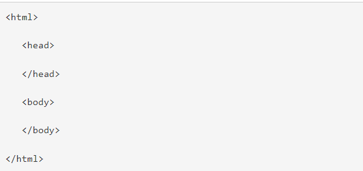
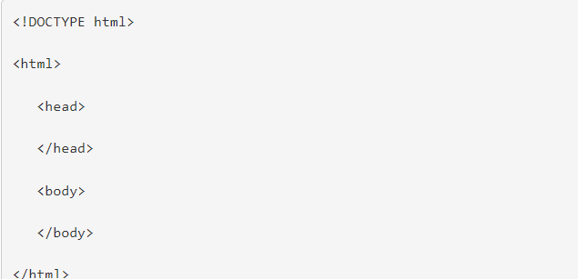
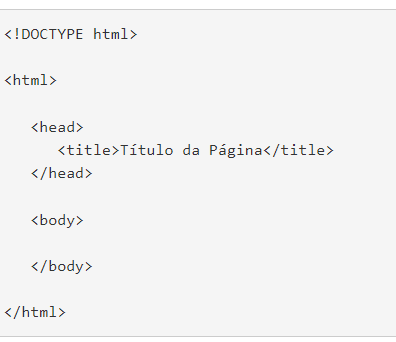
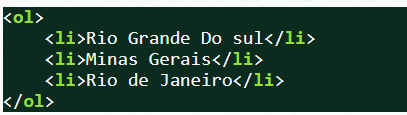
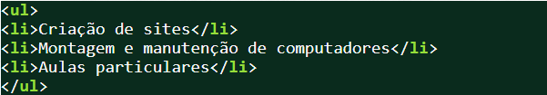

Primeiros Passos com HTML
Índice
História dos Computadores
(Voltar)
Os primeiros computadores surgiram na década de 1940 e possuíam somente dois níveis de linguagem: o de máquina, no qual toda a programação era feita, e o da lógica digital, onde os programas eram efetivamente executados.
Em 1951, foi projetado um computador de hardware simplificado, com três níveis, que executava um pequeno conjunto de microinstruções armazenadas, o que exigia menos circuitos eletrônicos. A partir daí começou a evolução das linguagens e as arquiteturas das máquinas, impulsionadas, principalmente, pelo aparecimento de um novo conceito na história da computação: os Sistemas Operacionais.
1956 a 1963: nesse período, foram produzidos os primeiros computadores com a tecnologia do transistor, as primeiras impressoras, fitas magnéticas entre outros.
1964 a 1970: surgem computadores mais rápidos por conta dos circuitos integrados, dos sistemas operacionais e das linguagens de programação.
1970 até os dias de hoje: inicio das tecnologias LSI, VLSI e ULSI, que abrigam milhões de componentes eletrônicos em um pequeno espaço ou chip. Dois avanços que configuram um divisor de águas são o processamento paralelo, que quebrou o paradigma de von Neumann, e a tecnologia dos supercondutores.
Veja alguns dos avanços tecnológicos da história dos computadores:
- MARK 1 – 1944
- ENIAC – 1946
- EDVAC – 1946
- TRANSISTOR – 1947
- LEO – 1951
- WHIRLWIND – 1953
- CIRCUITO INTEGRADO – 1958
- PDP-1 – 1960
- ATLAS – 1962
- PDP-8 – 1965
- SYSTEM 360 – 1965
- MOUSE – 1968
- MICROPROCESSADOR – 1971
- ALTAIR 8800 – 1974
- MICROSOFT – 1975
- Apple II – 1977
- DISQUETE DE 31/2 – 1981
- IBM-PC – 1981
- XEROX 8010 – 1981
- OSBORNE 1 – 1981
- WORD – 1983
- MACINTOSH – 1984
- IMPRESSORA A LASER – 1984
- WINDOWS – 1985
- CD-ROM – 1985
- DESKPRO 386 – 1986
- Internet – 1990
- iPod – 2001
- MICRO DE 100 DÓLARES – 2005
O que são Clients?
(Voltar)
- Inicia pedidos para servidores;
- Espera por respostas;
- Recebe respostas;
- Conecta-se a um pequeno número de servidores de uma só vez ;
- Normalmente interage diretamente com os servidores através de seu software aplicação especifico, que lhe possibilita a comunicação com o servidor;
- Utiliza recursos da rede.
O que são Servidores?
(Voltar)
- Sempre espera por um pedido de um cliente;
- Atende os pedidos e, em seguida, responde aos clientes com os dados solicitados;
- Podem se conectar com outros servidores para atender uma solicitação específica do cliente; jamais podem se comunicar.
- Fornece recursos de rede.
- Normalmente interage diretamente com os usuários finais através de qualquer interface com o usuário;
- Estrutura o sistema
Estrutura Básica do HTML
(Voltar)
Sempre que iniciamos um novo arquivo, a primeira coisa a fazer é escrever a estrutura HTML. Trata-se de algumas tags que todos os documentos HTML devem ter. Alguns desenvolvedores costumam ter um arquivo HTML já salvo para utilizar e poupar o trabalho de ficar escrevendo as mesmas tags toda vez que for criar um HTML novo.
Vamos ao código da estrutura:

Explicando a estrutura básica do HTML
Note que a tag envolve todos os demais códigos HTML, com exceção da tag . Isso porque com a tag estamos informando ao navegador que o código que vamos trabalhar será da linguagem HTML. Se fossemos utilizar outra linguagem como o PHP por exemplo teríamos que colocar o código dentro das tags .
Bom, dentro das tags HTML temos outras duas tags. A tag e a tag . Head vem do inglês e significa cabeça e body significa corpo. Essa nomenclatura faz muito sentido já que é na tag head que guardamos as meta informações, que são informações que são usadas para determinados objetivos, mas que não aparecem no site quando o visualizamos no navegador.
(Box) O que são metadados? Para entender melhor o que significa metadados, podemos pensar no exemplo de fotografias que tiramos com o celular. Ao abrir uma fotografia, o que vemos é a imagem do que foi fotografado, porém, existem várias outras informações que foram gravadas em seu dispositivo além da imagem, como a data e hora que a fotografia foi tirada, o modelo do celular, modelo da lente, tamanho da imagem, tamanho do arquivo e até a localização de onde a fotografia foi feita. Essas informações não aparecem quando abrimos a fotografia, porém são muito úteis para, por exemplo, organizar os arquivos por tamanho, data, localização, etc.
Assim como nós, o HTML tem um corpo embaixo da cabeça. Ou seja, abaixo da tag head encontramos a tag body. É na tag body que colocamos tudo o que queremos que apareça na tela do navegador, como o fundo, os textos, imagens, links, etc.
Fora essa estrutura básica, é preciso adicionar o seguinte código antes de todos os demais:

Declaração Doctype
(Voltar)
Este código é uma declaração do tipo de documento que estamos criando. Ele existe porque cada navegador, especialmente antigamente, costumava exibir o HTML de forma diferente uns dos outros. Ou seja, quando você abria seu site em um navegador, ele ficava de um jeito, quando abria em outro navegador, ficava de outro jeito. Para resolver esse problema foi criada essa declaração, que passa parâmetros para que os navegadores sigam um mesmo parâmetro de exibição do HTML. Assim, seu arquivo HTML será exibido da mesma forma em diferentes navegadores.
Tag Title
(Voltar)
Antes de finalizar vamos colocar uma cereja no bolo. Vamos adicionar a tag title dentro da tag head. Com essa tag podemos definir um título para nossa página que aparecerá na aba do navegador. Veja o código:

Diferença de Listas
Listas Ordenadas
(Voltar)
Utilizada para marcar uma ordenação no conteúdo. Quando a informação tem uma seqüência a ser respeitada. Para iniciar a marcação utilizamos o elemento ol. Depois para marcamos os itens das listas, utilizamos o elemento li. As listas são renderizadas com uma marcação seqüencial antes do conteúdo da lista. Veja o exemplo:

Listas não-ordenadas.
O tipo de lista mais comum de se utilizar em sites são as listas não-ordenadas. Esse tipo de lista é utilizado quando a informação a ser mostrada não segue uma seqüência. Para iniciar uma lista não ordenada usamos o elemento ol. Para marcar os itens dessa lista usamos o mesmo elemento li. Veja o exemplo:

Listas de Referências:
- Primeiros Computadores
- Modelo Cliente Servidor
- Tipos de Listas
- Estrutura HTML